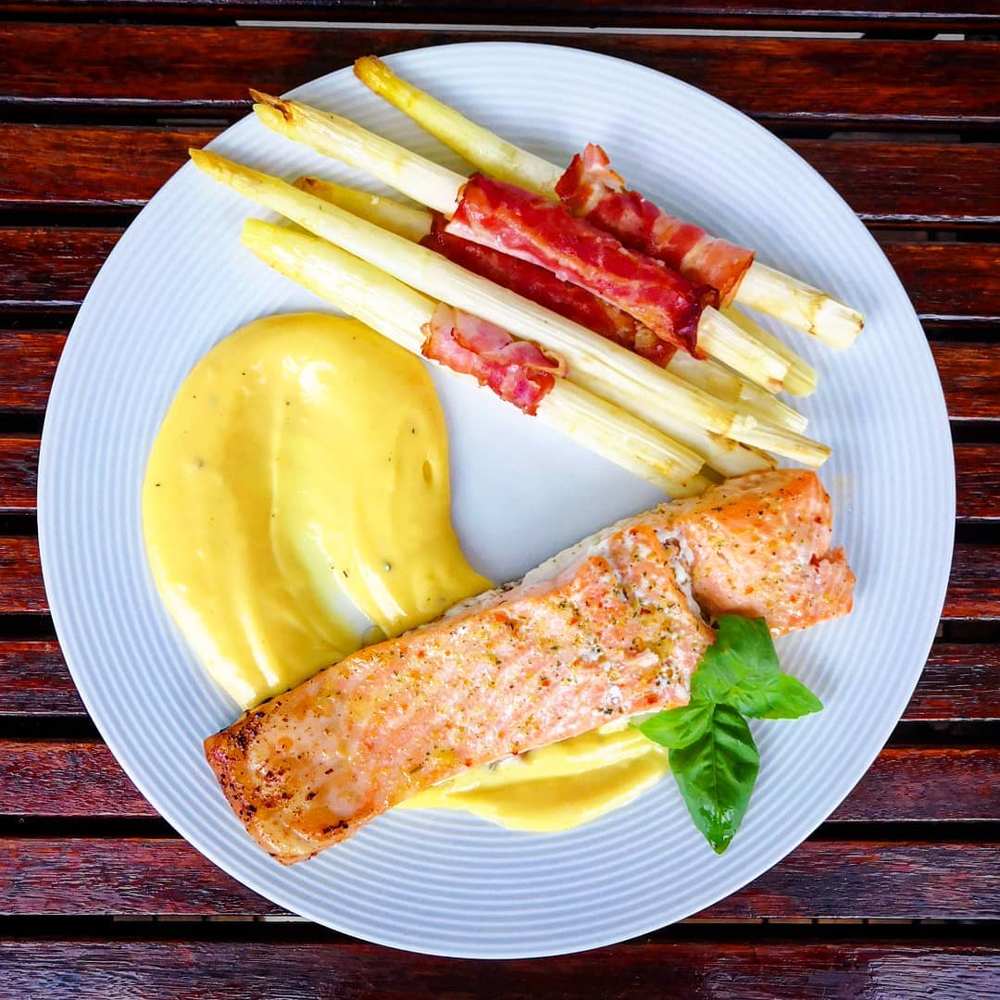

Holandská omáčka podľa @lowcarb_lida — Normy Jedál
🐟 Losos s holandskou omáčkou, chřest se slaninou 🐟
Holandská omáčka:
➡️ 3 žloutky
➡️ 1 lžíce šťávy z citronu
➡️ 100g másla
➡️ Sůl, pepř
➡️ 1 lžičku dijonské hořčice
⏭️ Žloutky s citronovou šťávou vyšleháme v misce. V pomalé vodní lázní postupně do žloutků zašleháme rozpuštěné máslo. Když omáčka zhoustne, odstavíme z vodní lázně. Osolíme, opepříme a zašleháme hořčici.
#food #pornfood #lowcarb #lowcarbdiet #inspiracelowcarb #fitrecepty #zdraverecepty #bezcukru #bezmouky #nacukrunejedu #milujulowcarb #jsemlowcarb #nizkosacharidovastrava #lunch #lunchtime #jsemvprogresu #healthyfood #healthylifestyle #healthy #sdilenimotivuje #losos #holandskaomacka #chrest